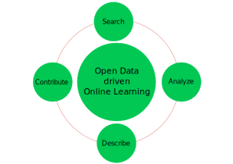
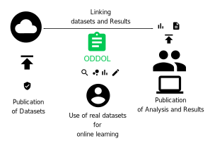

ODDOL-Open Data Driven Online Learning
EUvsVirus Hackathon
John Samuel
24
th
-26
th
April, 2020
ODDOL

ODDOL-Open Data Driven Online Learning
Problem
Problem: Current Approach
Problem
Dataset publishers
Conduct experiments and surveys
Publish dataset with open licenses
Researchers and Policymakers
Use and analyse the datasets
Test various data mining and machine learning algorithms, tools and visualization applications
Publish interesting insights
Online Learning Community
Which dataset to use?
Which algorithm to test?
How to verify the published results?
Which visualization is the best for this use case?
...
ODDOL

ODDOL: Solution
ODDOL: Weekend Contributions
Contributions made during the weekend
Architecture Design
:
Architecture:
https://github.com/johnsamuelwrites/ODDOL
Data Models
:
Dataset:
https://www.wikidata.org/wiki/EntitySchema:E207
SPARQL endpoint:
https://www.wikidata.org/wiki/EntitySchema:E208
API endpoint:
https://www.wikidata.org/wiki/EntitySchema:E209
Demonstration
:
First demo:
https://tools.wmflabs.org/oddol/
ODDOL: Weekend Contributions
Information Required: Linking Datasets and Documents
License of dataset
Publisher of dataset
Funding agency or sponsor behind the published datasets and results
URL of the dataset and published document
Data format used by the dataset
Main subjects of the dataset as well as the published result
Purpose behind use of dataset in the published document
Works cited by the datasets (including other datasets)
How to obtain these information?
Curation by community members
Automated annotation of published documents
Where to store these information?
Local instances (servers) including Wikibase instances
Community managed data stores including Wikidata
ODDOL: Weekend Contributions
Tools used
Wikidata
HTML, Javascript, Nodejs, CSS
SPARQL
Mediawiki API
Material design
Shape Expressions (ShEx)
Python
Future Works
Automated annotation linking datasets and results
Periodic open dataset usage reports
Analysis of results based on algorithms
Ability to edit and describe a dataset and write a report directly on the platform
Integration with other applications like Zenodo, Figshare, etc.
Easy access on mobile devices
ODDOL
Thank you
Credits
Icons:
https://material.io/resources/icons/?icon=bubble_chart&style=baseline